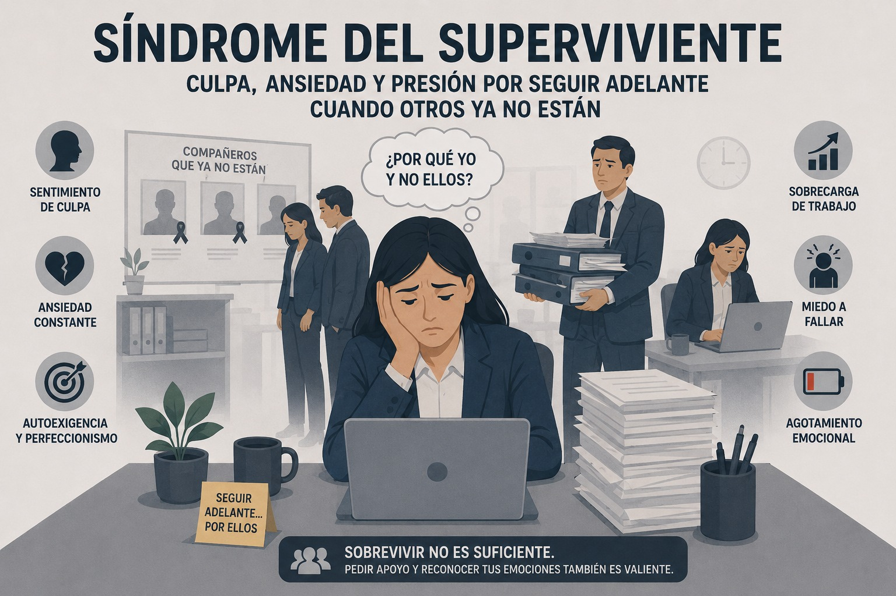

Riesgo psicosocial
Síndrome del superviviente
Impacto psicológico en quienes permanecen después de despidos, reducciones de personal o pérdidas organizacionales.

Definición y concepto
El síndrome del superviviente laboral se refiere al impacto psicológico que sigue a un despido o una reducción de personal en el trabajo, que puede dejar a los empleados que permanecen lidiando con sentimientos de culpa, traición y una disminución de la autoestima. Este fenómeno influye significativamente en los aspectos profesionales y personales de la vida de una persona, por lo que es importante reconocer sus síntomas y buscar ayuda (Maynard, 2024).
El downsizing o reducción de plantilla
Downsizing combina las palabras down (bajar) y sizing (tamaño), lo cual significa reducir el tamaño de la empresa. El término se acuña al principio de la década de los 70 en la industria automovilística de los EE UU refiriéndose a la reducción de producción del sector. Ha sido a partir de 1982 cuando se empezó a utilizar en lo referente a la disminución de empleados de una empresa.
Este fenómeno consigue en llevar a cabo una estrategia por parte de las empresas que se basa en reducir el número de empleados que realizan su actividad laboral para hacerla así más competitiva. En cuanto a los trabajadores, sus efectos suelen ser los contrarios a la satisfacción laboral (MetaContratas, s. f.).
Características
Sentimiento de "actuar mal" por vivir: La característica principal es la percepción subjetiva de que sobrevivir o seguir adelante es una acción incorrecta o moralmente reprochable.
Pensamiento contrafáctico (ideas de salvación): El individuo genera de forma recurrente escenarios hipotéticos sobre lo que "podría haber hecho" para cambiar el desenlace.
Juicio basado en información posterior: El superviviente tiende a culparse utilizando información que no poseía en el momento del trauma.
Tendencia al aislamiento: El fenómeno suele manifestarse con un alejamiento de la red cercana de apoyo.
Creencia de interdependencia vital: Aparece la idea de que si otra persona no puede vivir, el sobreviviente tampoco tiene derecho a hacerlo.
Sintomatología fluctuante y no lineal: El cuadro no presenta una mejoría constante; se caracteriza por tener "altos y bajos" y momentos de empeoramiento cuando la persona se presiona por estar bien rápidamente.
Necesidad de validación externa: Debido a la naturaleza del sentimiento, suele requerir la intervención de terceros (red de confianza o profesionales) para encontrar soluciones (Contigo en el recuerdo, 2021).
Causas
Además de la culpa asociada a no ser despedido, los siguientes factores contribuyen a las repercusiones emocionales, psicológicas y físicas:
Pérdida de relaciones y amistades: decir adiós a alguien con quien has trabajado es difícil.
Pérdida de estatus y sentido de pertenencia
Trabajar fuera de la zona de confort o de competencia.
Carga de trabajo adicional
Incertidumbre persistente (Morgan, s. f.).
Consecuencias
Los empleados que padecen el síndrome del superviviente en el lugar de trabajo pueden experimentar una variedad de emociones, entre ellas:
Dolor por la pérdida de compañeros de trabajo
Ansiedad por la seguridad laboral
Culpa por seguir teniendo trabajo
Enojo por la pérdida de amigos en el trabajo
Estrés debido al aumento de la carga de trabajo por la reducción de personal (Maynard, 2024).
Estas respuestas emocionales pueden derivar en diferentes comportamientos y consecuencias dentro de la organización, entre las cuales se destacan:
- Pérdida de tiempo:
Los empleados pueden paralizarse o sentir ansiedad, y debido a que se ven abrumados por el miedo a ser los próximos, se vuelven menos productivos.
También existe el efecto de que los empleados trabajan más horas que antes, pero rinden menos. Se concentran en su trabajo y se vuelven invisibles por temor a otra ronda de despidos inminente. Hacen lo que se les dice, pero pueden perder el compromiso con la organización, lo que conlleva una falta de motivación para trabajar duro y hacer un buen trabajo.
Esta desmotivación es una de las mayores consecuencias de los despidos y da lugar a una plantilla que ha sido descrita como la de los "muertos vivientes" (Davis, 2021).
- Trabajadores trabajando a toda máquina:
Los empleados pueden sentir que la empresa los valora más que a aquellos que han sido despedidos.
Creen que un menor número de compañeros conlleva una menor competencia.
Sienten ira y resentimiento si están sobrecargados de trabajo y no sienten que han sido compensados de manera justa (Davis, 2021).
- Empleados que solicitan otros puestos de trabajo:
Los trabajadores que están preocupados e inseguros sobre su futuro pueden entrar en pánico después de los despidos, lo que los lleva a buscar otros trabajos y/o a abandonar la organización.
Las investigaciones demuestran que el efecto de una sensación de vulnerabilidad a largo plazo para los trabajadores, durante el período previo a los despidos y la adaptación posterior a los mismos, puede ser peor psicológicamente que para aquellos que fueron despedidos (Davis, 2021) .
- Pánico tras la pérdida de un gerente:
Si un empleado pierde a su jefe directo, la confusión que esto genera puede provocar que pierda la confianza en la empresa y en la persona que asumirá ese cargo. Esto puede derivar en la necesidad de mayor orientación y seguridad.
Buscarán una figura de autoridad a la que aferrarse o de la que obtener una falsa sensación de seguridad, y tal vez a la que escuchar y difundir chismes (Davis, 2021).
Prevención y recomendaciones
- Céntrese en una comunicación transparente y directa, en todo: en momentos de incertidumbre, tus empleados esperan que les hables con franqueza. Necesitan claridad, honestidad y coherencia, incluso si las noticias no son buenas o la situación no está del todo clara.
Líneas de comunicación claras mediante:
Utilizar diversos formatos y canales de comunicación para llegar al mayor número posible de empleados.
Señalizar y habilitar mecanismos bidireccionales para recibir comentarios , como encuestas de compromiso de los empleados, encuestas rápidas, reuniones generales con todo el personal y horarios de oficina que se puedan reservar.
Proporcionar a los gerentes puntos clave sobre cómo abordar la noticia con sus equipos.
Explicar, en la medida de lo posible, los criterios de decisión sobre quién fue despedido y por qué (Hogg, 2026).
- Reconocer el impacto y validar cómo se sienten los empleados: durante los despidos masivos, las emociones de los empleados están a flor de piel. No basta con decir lo que pasó; hay que reconocer su impacto emocional. Se trata de reconocer que sí, que esto es terrible , y que es totalmente normal sentirse así (Hogg, 2026).
- Orientar de forma proactiva sobre los recursos de salud mental: un despido genera una serie de nuevos factores de estrés. Sin embargo, es poco probable que los empleados consulten el manual del empleado en busca de estrategias para afrontarlo. Los responsables de recursos humanos y los gerentes deben hacer que ese apoyo sea visible e inconfundible (Hogg, 2026).
- Ayudar a los gerentes a salvaguardar el bienestar emocional de su equipo : el apoyo puede manifestarse en conversaciones y reuniones periódicas. Pero también consiste en reconocer las señales sutiles de que alguien está pasando por dificultades emocionales, como cuando un miembro del equipo se aísla debido al estrés o al agotamiento (Hogg, 2026).
- Redistribuir las cargas de trabajo y ajustar las expectativas de rendimiento: un despido colectivo es, a la vez, algo habitual y diferente. La empresa tiene que seguir funcionando y los empleados tienen que seguir trabajando. Pero lo hacen lidiando con sus propias emociones y la presión de una carga de trabajo adicional impuesta por antiguos compañeros (Hogg, 2026).
Cuando la carga de trabajo y las emociones están a flor de piel, esto puede propiciar el agotamiento. En estos casos, los responsables de recursos humanos deben apoyar a los gerentes para que reorienten las prioridades del equipo, redistribuyan el trabajo y ajusten las expectativas de rendimiento a la realidad (Hogg, 2026).
- Replantear las estructuras y los ritmos del equipo: La redistribución no se trata solo de gestionar la carga de trabajo y la capacidad, sino también de gestionar el vacío que queda en el equipo. Se trata de reconocer que la fortaleza del equipo reside en cómo trabajan juntos (Hogg, 2026).
Material de apoyo
Mirar video en YouTube (MyrRXBqULpU) Mirar video en YouTube (peNnxeMxkF4)Referencias bibliográficas
Contigo en el Recuerdo. (2021, 23 de noviembre). Cómo enfrentarse a la culpa del sobreviviente [Video]. YouTube. https://www.youtube.com/watch?v=MyrRXBqULpU
Davis, S. (2021, junio 16). Workplace survivor syndrome. OpenLearn, The Open University. https://www.open.edu/openlearn/health-sports-psychology/psychology/workplace-survivor-syndrome
Hogg, C. (2026, enero 21). How to support teams through workplace survivor syndrome. Lattice. https://lattice.com/articles/workplace-survivor-syndrome-what-it-is-and-how-to-cope
Maynard, J. (2024, febrero 22). Understanding workplace survival syndrome and mental health amid layoffs. Spring Health. https://www.springhealth.com/blog/workplace-survival-syndrome
MetaContratas. (s. f.). Downsizing y el síndrome del superviviente. MetaContratas. https://www.metacontratas.com/downsizing-y-el-sindrome-del-superviviente/
Morgan, S. (s. f.). Understanding survivor syndrome. Museums Association. https://www.museumsassociation.org/careers/redundancy-hub/understanding-survivor-syndrome/
OpenAI. (2026). Imagen conceptual sobre Síndrome del Superviviente con subtítulo "Culpa, ansiedad y presión por seguir adelante cuando otros ya no están" [Imagen generada por IA]. ChatGPT. https://chatgpt.com
PsicoActiva. (2020, 24 de marzo). El Síndrome del Superviviente [Video]. YouTube. https://www.youtube.com/watch?v=peNnxeMxkF4